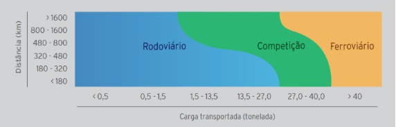

Quando se trata de demonstrar as vantagens que cada tipo de transporte pode proporcionar, é necessário observar-se a certos aspectos: Nem todos eles têm a mesma área de atuação, eficiência, flexibilidade e capacidade de carga. Analisar criticamente dois modais pode ser, de certa forma, até mesmo ser desnecessário, pois não se trata de uma competição para determinar qual deles é o melhor, e sim qual é o papel econômico que cada um desempenha
O sistema ferroviário, no entanto, tem grandes vantagens em comparação ao rodoviário, a depender da situação seriam essas: Menor custo, maior efetividade com cargas acima de 40 toneladas, e principalmente menos poluição ao meio ambiente. Como várias pesquisas já foram capazes de provar. Dentre as pesquisas Márcio Rogério aponta as seguintes vantagens das ferovias em um cenário ideal:
- Necessita entre 10 e 15 vezes menos espaço viário
- Gasta de 3 a 5 vezes menos combustível
- causa 50 vezes menos mortes por acidente
- provoca menos congestionamento, estresse e ruído
- poluí 44 vezes menos (ferrovia eletrificada ou não)


Esse gráfico feito pela ANTT, demonstra que o transporte ferroviário se torna mais eficiente do que rodoviário no deslocamento acima de 40 toneladas, sendo assim, transporta mais carga com menor preço. Na faixa entre 27 a 40 toneladas, tanto o modal ferroviário quanto o rodoviário competem de igual a igual, a depender principalmente da quantidade de carga transportada e distância percorrida: Quanto maior a distância, no entanto mais vantajoso é optar pelo transporte sobre trilhos, pois além de ser mais eficaz ele se torna mais barato.
Um estudo de Ilos ainda mostra que, para fazer o transporte de mil toneladas uma ferrovia em uma ferrovia brasileira, é preciso gastar R$43 por quilômetro. Enquanto nas rodovias esse valor é de R$259, seis vezes mais caro. Além disso Agência de Proteção Ambiental dos Estados Unidos (EPA) calculou que a cada tonelada transportada por 1,61 quilômetro, um caminhão típico emita aproximadamente três vezes mais óxidos de nitrogênio e particulados que uma locomotiva. Logo, nessa situação sistema ferroviário acaba se tornando superior ao rodoviário em questões financeiras, ambientais e em relação a eficácia do transporte ferroviários.
As ferrovias apresentam em relação a outros sistemas de transporte, é graças a sua característica de transportar muitos vagões com apenas uma locomotiva, poupando outras viagens. Nesses casos há, portanto, uma maior eficiência do que qualquer outro meio de transporte, seja ele rodoviário, seja aquaviário ou aéreo. Não descarta-se, no entanto, o fato de outros meios de tranporte terreste, como os carros ou caminhões também serem necessários para suprir os defeitos que os trens apresentam (traçado fixo), além de serem capazes de tranposrtar tipos diferentes de carga e de realizar percursos que atendem baixas ou médias distancias.

Nesse sentido, as ferrovias se aplicam preferencialmente, para o tráfego concentrado de cargas, enquanto o rodoviário oferece vantagens quando é necessário retirá-las na fonte com frequência, repetição de horários e flexibilidade de rotas. Percebe-se que em decorrência do traçado fixo dos trens, é necessário uma logística bem planejado e organizado, para evitar ao máximo fazer percursos desnecessários.
Vale ressaltar que não são em todos os casos que se torna vantajoso realizar o transporte de mercadorias com rodovias e, nem sempre se torna vantajoso o transporte ferroviário, sendo necessário avaliar o propósito, distância percorrida e demais variáveis. Essa avaliação, portanto, não foi realizada no Brasil durante o período em que as rodovias foram implementadas e as ferrovias perderam o incentivo. A ideia de crescer através da indústria do carro foi de certa forma equivocada. Para industrializar o país se optou pelas empresas automobilísticas, capazes de trazer muitos empregos na faixa de tempo proposto.
Assim sendo, ao comparar as ferrovias com rodovias, apesar da superioridade do primeiro em certos casos, esses últimos não devem ser excluídos da economia de um país, tendo em vista sua flexibilidade de rotas e sua menor necessidade de planejamento. Tanto a densidade de tráfego e produtividade ferroviário, quanto o tipo de mercadoria transportado e a distância percorrida devem ser considerados ao buscar o equilíbrio entre meios de transporte. O monopólio de um meio de transporte nunca é a melhor solução para a economia de um país.